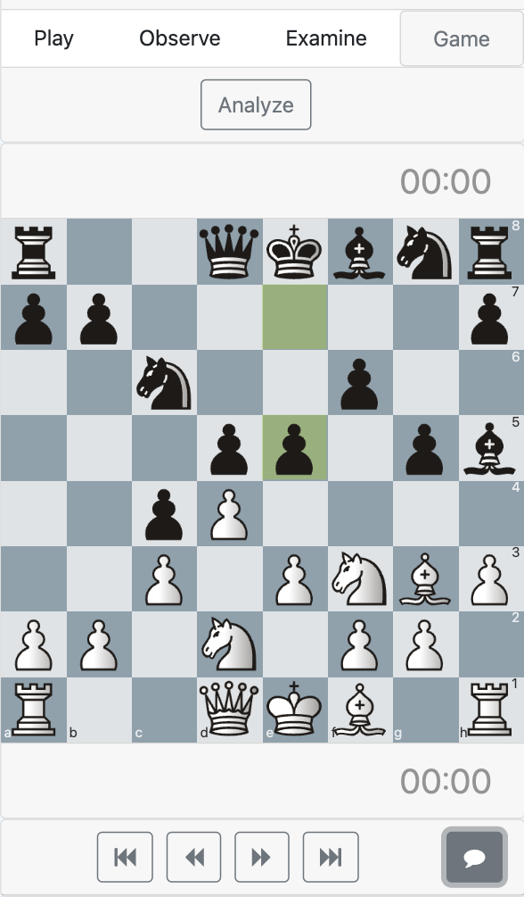

800k+ registered FICS accounts
FICS community
Play and chat on one of the oldest internet chess servers, with public channels, regular players, and relayed games.
Play on FICS from a clean web client built for live games, analysis, puzzles, tournaments, and community channels.
Free Chess Club connects to the Free Internet Chess Server with live boards, chat, analysis, tournaments, and browser-friendly controls.
Play and chat on one of the oldest internet chess servers, with public channels, regular players, and relayed games.
Use live boards, move lists, chat, and analysis tools without installing a separate chess client.
Play rated games, solve puzzles, join tournaments, try variants, challenge the computer, or watch live relays.
Install Free Chess Club for macOS, Windows, Linux, or Android when you want a focused chess window outside the browser.

What a great interface for chess enthusiasts ... The best of web meets the best of chess.
A new web-based interface for connecting to FICS has been needed for a long time.
This looks really good ... This could clearly be the best web/mobile FICS UI.